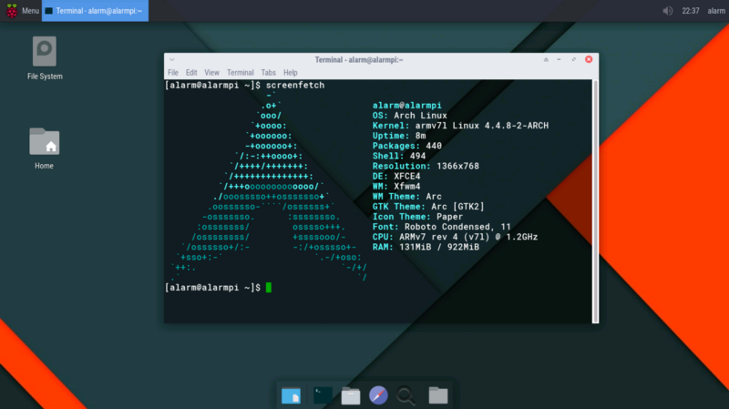
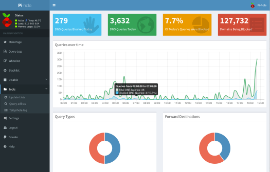
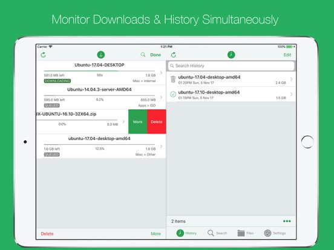
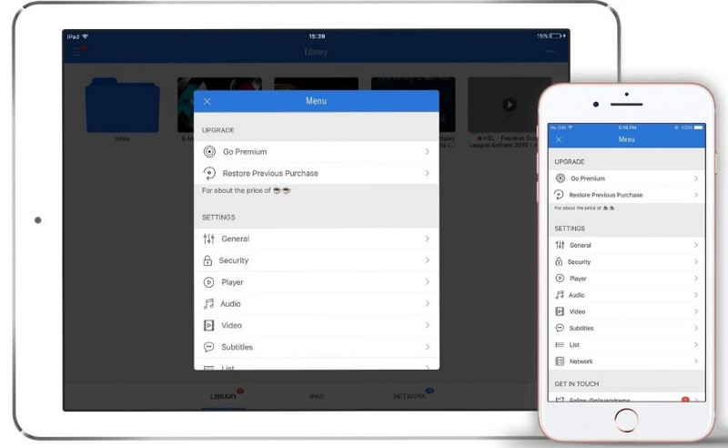

Recently I wrote about why I'm using an iPad Pro as my main "at home" machine and how I'm generally using it for tinkering around with remote servers. There is however, one caveat. I do still have an at-home server that I use for helping with making the iPad as feature rich as I need it to be.
To do this, I essentially have Archlinux running on an old Thinkpad X230, sitting under my router connected via an ethernet cable to keep things nice and stable. The only way I manage it is over SSH.

While the iPad has the ability to add content blockers into Safari, this (obviously enough) did not block the ads within Apps, nor did it provide as complete an ad-blocking setup as I would have liked. Though I can recommend 1Blocker as a pretty great app in a pinch.
For this I ended up using pi-hole, a pretty excellent ad-blocking solution that works on the router end of things. There's a great guide on their site, that allows you to set your router to use a local DNS server(instead of your ISPs or Google's for example). Also how pi-hole blocks is pretty great too, it attempts to minimise visual interruption, which is neat.

Very rarely do I need to use Usenet these days, my various TV/Movie subscription almost always sort me out. When I do need to grab something off Usenet, I have a very nice setup connecting my iPad to my Archlinux box to add a few nice features.

Firstly I installed/configured NZBGet on my Archlinux machine and ensured I could connect to the WebUI from the iPad. Don't worry if the UI looks a bit rough around the edges, someone has written a really nice client for IOS.
The next setup it to down/setup NZBClient for NZBGet on my iPad, which doesn't take long. You can fill in both your NZBGet server details as well as your indexer, that way, you can search for stuff and download it directly from your iPad, pretty seamless! However what happens when you want to watch/listen to anything you might have grabbed from Usenet?

The most useful/performant App I found so far for Media Streaming, is an app called PlayerExtreme. It supports a lot of different remote server types. For me I actually found just setting up plain Samba on Archlinux worked really well for streaming, but there's plenty of other protocols you can try.
Either way, it, combined with my Usenet client means I never need to really hit the server anymore, everything has been up and running for a few months now and is always working as expected. I'd definitely give this is a go if you running into similar limitations on your iPad.